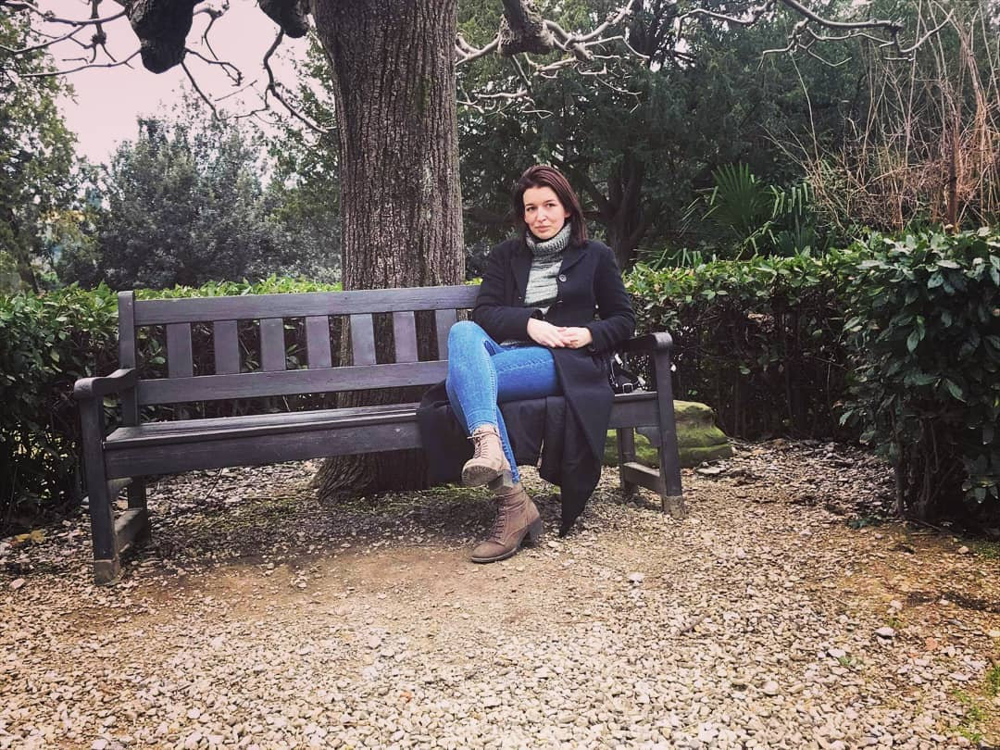

Ahoj, jmenuji se Anna. V současné době pracuji jako zubní technik. Mezi mé koníčky patří yóga, cestování, čtení a před nějakou dobou jsem se začala učit HTML a CSS.(JavaScript odkládám na příští pondělí)
Jmenuji se Anna. V současné době pracuji jako zubní technik v zubní laboratoři. Zaměřuji se hlavně na menší práce jako jsou korunky a můstky. Mezi mé koníčky patří yóga, cestování, čtení a před nějakou dobou jsem se začala učit HTML a CSS. Ktéréžto jsem se začala učit protože jsem chtěla porozumět tomu, o čem si přítel se svými kamarády povídá u piva. A pak mně to začalo nějak bavit až jsem nakonec skončila na kurzu u Czechitas. A taky se nerada fotím.
Jako zubní technik se zaměřuji především na fixní protetiku a prozatím zhotovuji spíše menší zubní náhrady jako jsou korunky a můstky. K jejich návrhu a modelaci využívám software exocad. Každou náhradu přizpůsobuji jedinečným potřebám pacienta. Kladu vysoký důraz na estetiku a funkčnost zubní náhrady. Práce v exocadu je dynamická a plná výzev, které mě neustále motivují k rozvoji a zdokonalování mých dovedností. Společně s naším týmem hledáme inovativní řešení pro zefektivnění procesu výroby.